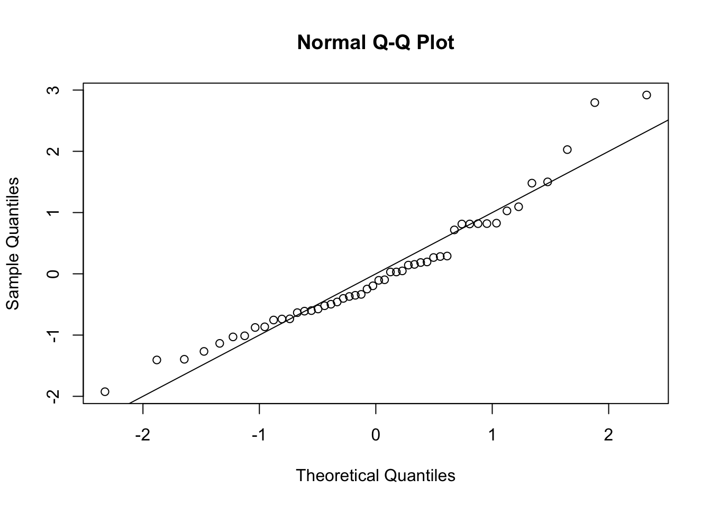

lmCars <- lm(dist ~ speed, cars)7 Checking model assumptions
In this chapter we consider how to test the assumption that the errors \(\varepsilon_1,\varepsilon_2,\ldots,\varepsilon_n\) are independent and identically normally distributed. This is mainly done through inspection of the residuals.
7.1 Residuals for model checking
An important feature of any statistical analysis should be to check, as far as it is possible to do so, that the assumptions made in the model are valid. In the case of linear models, our assumptions concern the error terms \(\boldsymbol{\varepsilon}\). For observation \(i\), the model error is \(\varepsilon_i=y_i-\boldsymbol{x}_i^T\boldsymbol{\beta}\); the residual \(e_i=y_i-\boldsymbol{x}_i^T\boldsymbol{\hat{\beta}}\) can be thought of as an estimate of this.
Recall that we assume the \(\varepsilon_i\) to:
have zero mean (which is equivalent to assuming that we have got the systematic part of the model represented by \(X\boldsymbol{\beta}\) right);
be independent;
have common variance (homoscedasticity);
be normally distributed.
In principle, if we knew the actual values of the \(\varepsilon_i\) then we could check these assumptions. We could look to see if \(\varepsilon_1,\varepsilon_2,\ldots,\varepsilon_n\) looked in all relevant respects like a sample from a normal distribution with zero mean.
However, we do not know the \(\varepsilon_i\) and cannot deduce them from the observed \(y_i\) unless we know \(\boldsymbol{\beta}\) (the true parameter vector rather than the estimate \(\boldsymbol{\hat{\beta}}\)). In practice, we only have estimates of the \(\varepsilon_i\), which are the residuals \(e_i\), \[ e_i=y_i-\boldsymbol{x}_i^T\boldsymbol{\hat{\beta}} \] Therefore, the main strategy for checking the assumptions of linear models is to perform various checks using residuals.
7.2 Standardized residuals
Technically, we should recognize that the residuals have different properties from the errors. If the model is correct, they are normally distributed and have zero mean. However, they are not independent and do not have a common variance; in Section 2.7.2 we showed that the residual vector \(\boldsymbol{e}\) has variance \[ Var(\boldsymbol{e})= \sigma^2(I_n-X(X^TX)^{-1}X^T). \]
We can correct for the unequal variances by defining the standardized residuals, which are given by \[ s_i=\frac{e_i}{\sqrt{\widehat{Var}(e_i)}}, \] where \(\widehat{Var}\) is element \(i,i\) of \[ \hat{\sigma}^2(I_n-X(X^TX)^{-1}X^T) \]
There can be advantages to doing this, but there are disadvantages too. After standardising, the distribution of each residual is \(t_{n-p}\), but they are still not independent. The correlations may be small, however.
Note
Assuming \(n-p\) is fairly large, it’s common practice to approximate the \(t_{n-p}\) distribution by the \(N(0,1)\) distribution, and so check whether the standardised residuals are normally distributed.
7.3 Residual plots
The most common diagnostic use for residuals is to plot them in various ways. We first fit our model:
then use MASS::stdres() to get standardised residuals:
s <- MASS::stdres(lmCars)7.3.1 Checking normality
There are various plots we can try.
- Q-Q plot:
A Q-Q (quantile-quantile) plot is a plot the quantiles of the observed data against quantiles from a reference distribution, which we specify to be the standard normal distribution. This plot is useful as it allows a visual inspection of the normality of the residuals.
qqnorm(s)
abline(0, 1)
If a sample is genuinely from a normal distribution with constant variance, then the residuals will lie close to a straight line.
If the plot is clearly bowed, it suggests a skew distribution (whereas the normal distribution is symmetric).
If the plotted points curve down at the left and up at the right, it suggests a distribution with heavier tails than the normal (and therefore one that is prone to produce outliers).
In our case, the graph is a little bowed, suggesting a skewed distribution.
- Histogram
hist(s)The histogram is another way of looking at the underlying assumption of normality. In a large sample, it can be a useful addition to the normal plot, but with small samples it can be difficult to make meaningful conclusions.
7.4 Checking homoscedasticity (constant variance)
Note
- we use the term homoscedasticity to mean constant variance of the errors
- we use the term heteroscedasticity to mean non-homoscedasticity: non-constant variance
In Section 2.7.3 we showed that the residual vector \(\boldsymbol{e}\) is independent of the least squares estimator \(\hat{\boldsymbol{\beta}}\), under the assumption that the errors are independent with common variance \(\sigma^2\). Hence, under this assumption, \(\boldsymbol{e}\) would also be independent of the fitted values \(X\hat{\boldsymbol{\beta}}\), and so the standardised residuals would also be independent of the fitted values.
This gives us a way to check the constant variance assumption: we plot standardised residuals against fitted values. If the assumption holds, we shouldn’t be able to see any pattern in the plot.
plot(fitted(lmCars), s)The most common form of heteroscedasticity arises when larger observations are also more variable. This often happens when the response variable is necessarily positive. In this case, if the response is just above 0 its variance is likely to be less than if the response was much larger since the response is bounded below by zero.
We would observe this kind of heteroscedasticity in the plot by seeing the residuals appearing to fan out as we move from left to right, and this does appear to be the case in the above example.
Tip
The fitted value is a scalar quantity, regardless of the number of independent variables. This plot may reveal problems with the model assumptions (homoscedasticity) that we can’t easily see in plots of the raw data, if we have large numbers of independent variables.
7.5 Formal tests
The above residual-based plots offer an informal way of checking the fit of the linear model. We may construct more formal tests (note the difference between check and test) based on confidence intervals or hypothesis tests. Here, we just provide the most simple test, which is based on the assumption that if the model fit is good, then approximately the standardised residuals \(s_i\) follow a \(t_{n-p}\) distribution. We can then propose a test that would compare \(s_i\) with the quantile \(t_{n-p, 1-\alpha/2}\), for some value of the significance level \(\alpha\) as discussed below. If \(|s_i|>t_{n-p,1-\alpha/2}\), we would consider \(s_i\) to be too large for a \(t_{n-p}\) distribution and so we would consider the observation \(y_i\) to be an outlier.
We have multiple tests here: one per residual, and so the considerations from Section 6.1 apply. Noting that the standardised residuals are not independent, we use the Bonferroni correction (rather than Šidák) to give an indication of what should count as a large standardised residual.
Without applying the Bonferroni correction we would compare \(|s_i|\) with \(t_{48;0.025}\):
qt(0.975, 48)[1] 2.010635If we apply the Bonferroni correction we would have to use a significance level \(0.05/50=0.001\) which gives a new quantile \(t_{48; 0.001/2}\)
qt(1-0.001/2, 48)[1] 3.505068In the example, we’d note that the largest absolute standardised residual is greater than 2, but not greater than 3.5:
max(abs(s))[1] 2.91906
Solution
Obtain the standardised residuals
s <- MASS::stdres(lmCancer)A Q-Q plot suggests non-normality
qqnorm(s)
abline(0, 1)Plotting fitted values against standardised residuals shows clear heteroscedasticity, with the error variance increasing as the fitted value increases.
plot(lmCancer$fitted.values, s)